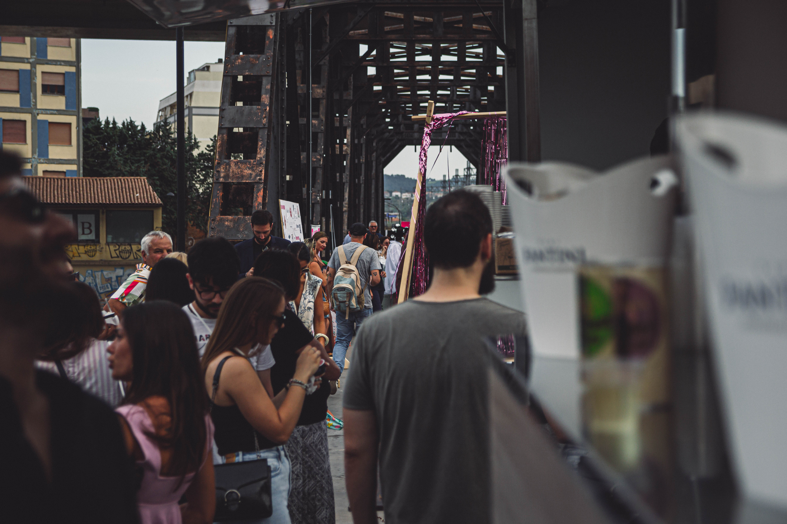
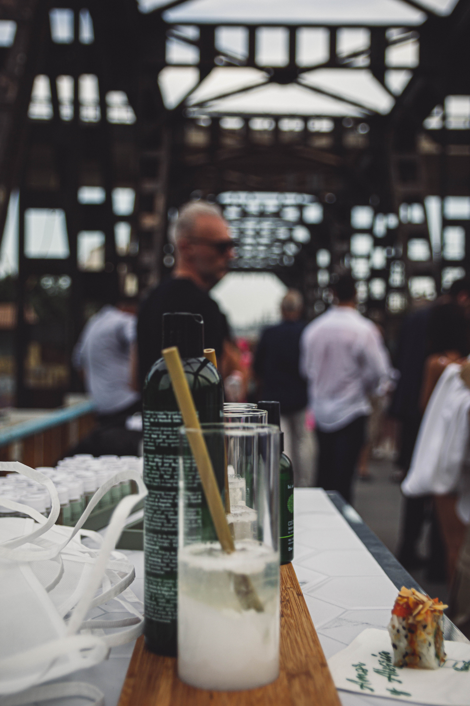
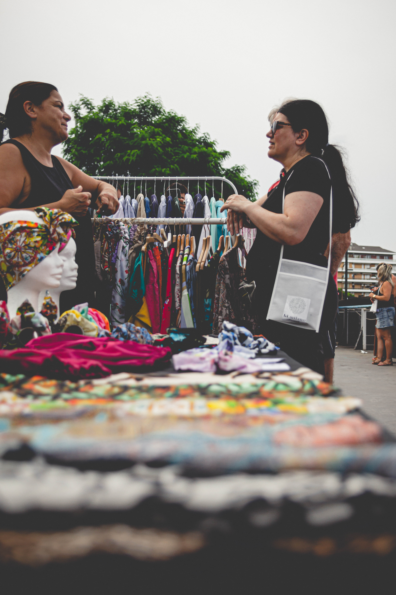
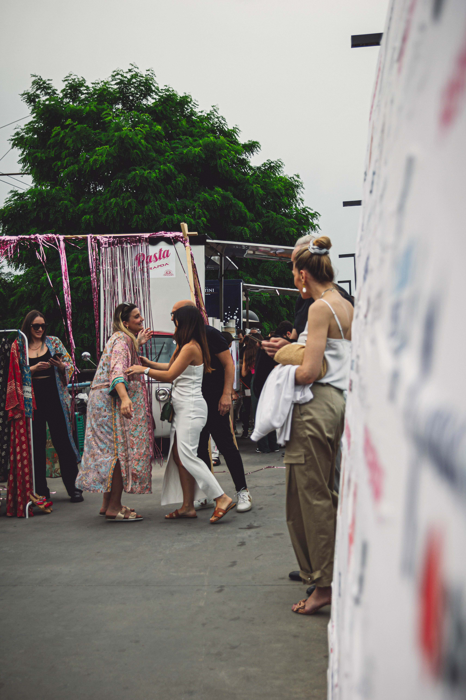

“NOMOD” MONOLITHIC OBJECTS & TABLE LIGHTING
La collaborazione con NOMOD ha avuto come obiettivo la definizione di un ecosistema di oggetti monolitici per l'abitare contemporaneo, concepiti all'incrocio tra la scultura d'ambiente e la luce d'accento. Il punto di partenza è stato il dialogo tra due materiali dalle proprietà complementari: la massa opaca, fredda e tattile dell'alluminio estruso anodizzato e la trasparenza eterea e cristallina del vetro borosilicato soffiato a bocca. La forma cilindrica monolitica funge da dissipatore termico naturale e diffusore luminescente, riflettendo la sorgente interna lungo le micro-scanalature create dalla spazzolatura radiale.
Ogni componente è stato progettato con tolleranze meccaniche micrometriche, consentendo alle superfici in vetro di innestarsi nel corpo in alluminio senza collanti o viti visibili. Il modulo d'illuminazione LED a basso consumo integrato emette una luce calda e radente che enfatizza la purezza geometrica e le imperfezioni volute della lavorazione semi-artigianale. Il risultato è un dispositivo silenzioso, atemporale e audace, che ridefinisce la relazione tra funzionalità quotidiana e contemplazione materica.



